La princesa, llamada Aurora, es llevada a un castillo encantado y, siguiendo el curso de los acontecimientos, se duerme durante muchos años. Finalmente, un príncipe llega al castillo, supera los obstáculos mágicos y la despierta con un beso de amor verdadero.
Joaquín Martinez
Legajo:94728/1
Historia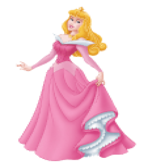
La historia gira en torno a una princesa que es maldita por una malvada hada a morir por pincharse el dedo con una rueca antes de cumplir los 16 años. Sin embargo, otra hada buena atenúa la maldición de la primera hada, haciendo que la princesa no muera, sino que caiga en un profundo sueño que solo puede ser roto por el beso de un príncipe valiente.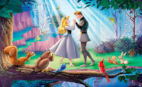
Esta historia ha sido adaptada y reinterpretada en numerosas ocasiones a lo largo de los años, apareciendo en diferentes formas en cuentos populares, obras de teatro, ballets y películas.
Videos de la historia oficial
Adaptación del original
Pelicula original
La Bella Durmiente...
¿Quién será..?
Aurora, abandonada en este castillo maldito, representa la fragilidad y la vulnerabilidad ante fuerzas más allá de su control. Su sueño prolongado simboliza la pérdida del tiempo, la juventud y la experiencia de la vida, todo ello atrapado en un letargo encantado. La maldición, lejos de ser una simple fatalidad, sugiere una influencia malévola que pervade su existencia desde el principio.
Textos
Utilicé un género narrativo conocido cómo "cuento de hadas retorcido". 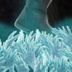 El género narrativo del "cuento de hadas retorcido" se caracteriza por su capacidad para desafiar y redefinir las convenciones establecidas en los cuentos de hadas clásicos. Al tomar elementos tradicionales, como castillos encantados,princesas y príncipes, y someterlos a un giro más oscuro y complejo, los narradores buscan explorar aspectos más profundos y matizados de la condición humana. Este enfoque permite adentrarse en las complejidades de los personajes
Paleta
En la elección de emplear colores fríos y apagados en la narración, 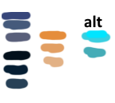 se busca crear una atmósfera que refleje la oscuridad y la melancolía intrínsecas de la historia. Los tonos fríos, como los azules y grises, sugieren un ambiente sombrío y desolado, enfatizando la naturaleza encantada y opresiva del castillo. Estos colores también contribuyen a transmitir la sensación de un mundo atrapado en el tiempo, donde la vida y la vitalidad se ven afectadas por la maldición que pesa sobre la protagonista. La paleta apagada, con tonos tenues y desaturados, añade una capa adicional de melancolía, destacando la pérdida y la tristeza que impregnan la narrativa.
EJEMPLO DEL PROCESO
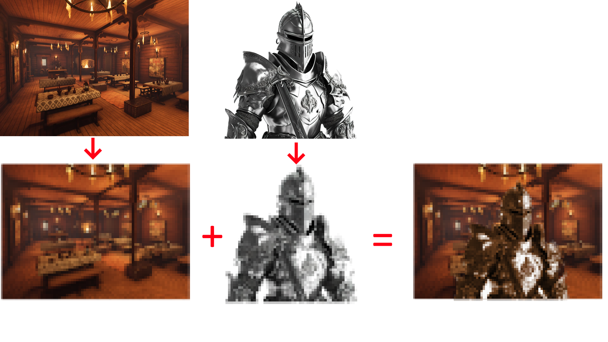
BOCETOS Y FINALES
Boceto - Final
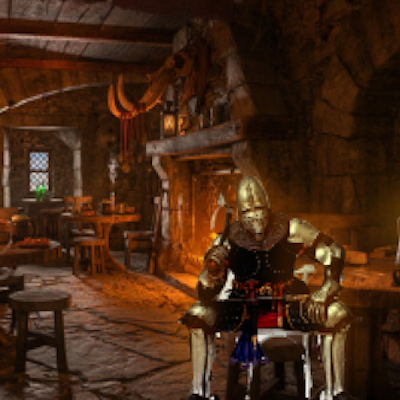
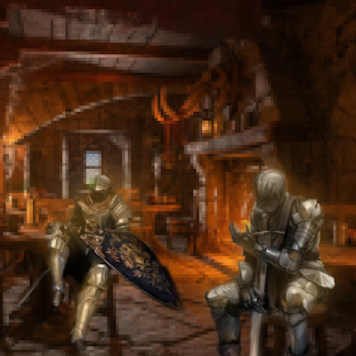
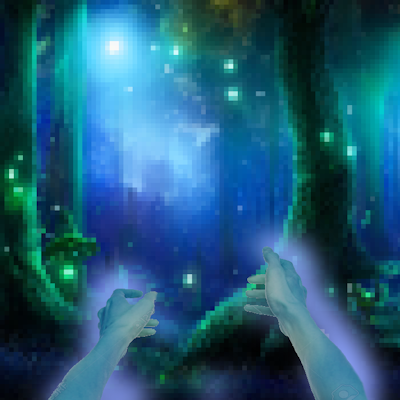
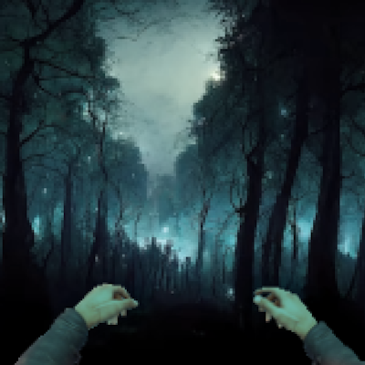
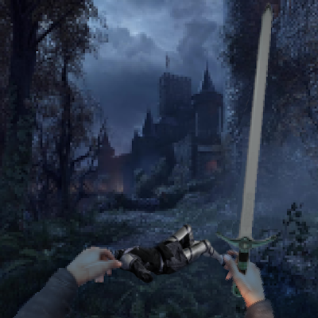
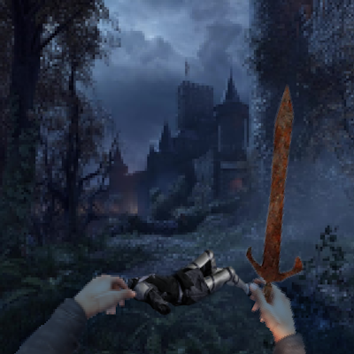
Reutilicé muchos elementos por lo cual hubo muy pocos bocetos, solo tuve que encontar unas manos y una espada que parezcan aptos para la naturaleza oscura y tenebrosa del cuento y después ampliar el estilo de los fondos para que aparente algo mucho más oscuro y no tan vibrante. También estuve un rato buscando un estilo de personajes que concuerden, y decidí pixelarlos menos para que se logre apreciar sus detalles.
ORGANIZACIÓN E IDEA MINIJUEGO
AVENTURA GRÁFICA Y JUEGO
Inicio del juego
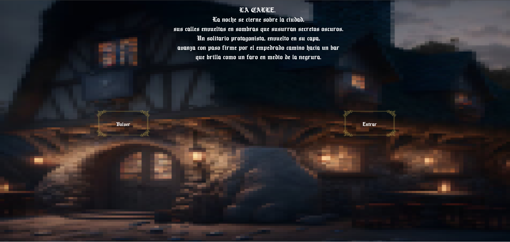
La aventura gráfica tiene 2 botones principales mediante los cuales te vas a poder desplazar de pantalla en pantalla, cada una con un resultado diferente, algunas son DEATH FLAGS, donde una mala decisión puede costarte la vida, otras simplemente son para volver, que el destino decida.
Minijuego
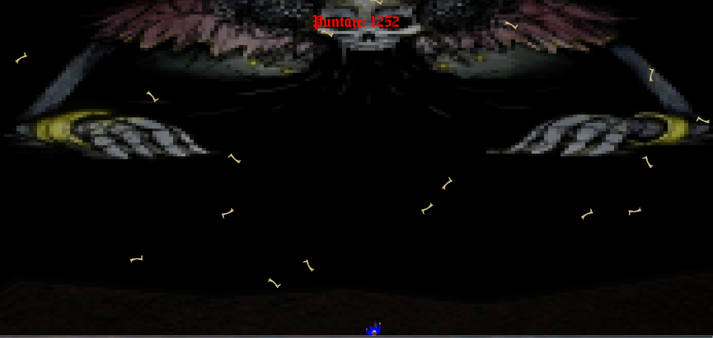
Este es el minijuego, aquí tendras que esquivar los huesos que te tire el jefe, los huesos se harán progresivamente más grande y más rápdios, esquivalos para que no te maten! al llegar a los 3000 de puntaje podrás escapar y volver a intentarlo